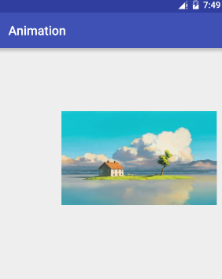
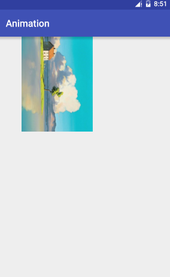
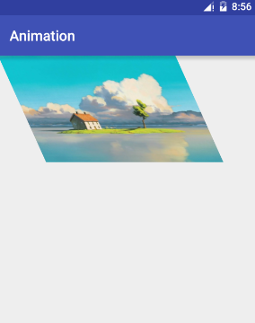
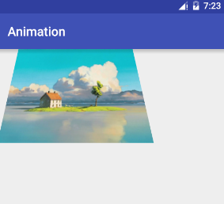

public boolean setPolyToPoly(float[] src, int srcIndex,float[] dst, int dstIndex,int pointCount)通过指定的0-4个点，原始坐标以及变化后的坐标，来得到一个变换矩阵。如果指定0个点则没有效果。
下面通过例子分别说明1到4个点的可以达到的效果：
这里写代码片##### 1个点，平移
只指定一个点，可以达到平移效果：

代码如下：
x
float[] src = {0, 0};int DX = 300;float[] dst = {0 + DX, 0 + DX};matrix.setPolyToPoly(src, 0, dst, 0, 1);canvas.drawBitmap(bitmap, matrix, paint);两个点，可以达到旋转效果或者缩放效果，缩放比较简单，这里我们来看旋转效果，一个点指定中心，一点指出旋转的效果

代码如下
x
int bw = bitmap.getWidth();int bh = bitmap.getHeight();float[] src = {bw / 2, bh / 2, bw, 0};float[] dst = {bw / 2, bh / 2, bw / 2 + bh / 2, bh / 2 + bw / 2};matrix.setPolyToPoly(src, 0, dst, 0, 2);canvas.drawBitmap(bitmap, matrix, paint);图片的中心点作为旋转的中心，前后不变，右上角变化到了下方，所以导致图片旋转了90度。
使用3个点，可以产生错切效果，指定3个顶点，一个固定，另外两个移动。
看图：

代码如下：
x
Matrix matrix = new Matrix();int bw = bitmap.getWidth();int bh = bitmap.getHeight();float[] src = {0,0, 0, bh,bw,bh};float[] dst = {0, 0, 200, bh, bw + 200, bh};matrix.setPolyToPoly(src, 0, dst, 0, 3);canvas.drawBitmap(bitmap, matrix, paint);透视就是观察的角度变化了。导致投射到平面上的二维图像变化了。
我们看下面的例子，更容易理解：

图片看起来好像倾斜了，实现特别简单：
x
Matrix matrix = new Matrix();int bw = bitmap.getWidth();int bh = bitmap.getHeight();float[] src = {0, 0, 0, bh, bw, bh, bw, 0};int DX = 100;float[] dst = {0 + DX, 0, 0, bh, bw, bh, bw - DX, 0};matrix.setPolyToPoly(src, 0, dst, 0, 4);canvas.drawBitmap(bitmap, matrix, paint);可以看到，只是把左右两个顶点往里面收拢了，这样就得出了一个有3d效果的透视图。